Sample Web Services
The relevant code is supplied in [DYALOG]\Samples\asp.net.
Sample: EG1
This sample is supplied in [DYALOG]\Samples\asp.net\webservices\eg1.asmx, which is mapped through an IIS virtual directory to the URL http://localhost/dyalog.net.18.2.unicode.64/webservices/eg1.asmx.
<%@ WebService Language="Dyalog" Class="APLExample" %>
:Class APLExample: System.Web.Services.WebService
:Using System
∇ R←Add args
:Access WebMethod
:Signature Int32←Add Int32 arg1,Int32 arg2
R←+/args
∇
:EndClassThe Add function is exported as a method that takes exactly (and only) two parameters of type Int32 and returns a result of type Int32. This means that R←+/args could be coded as R←args[1]+args[2], because .NET guarantees that a client can only call the method by providing two 32-bit integers as parameters.
Testing from a Browser
If you connect to a URL that represents a web service, the browser displays a page that provides information about the service and the methods that it contains. In certain cases, the page also contains form fields that let you invoke a method from the browser.
In your preferred browser, navigate to http://localhost/dyalog.net.15.0.unicode.32/webservices/eg1.asmx. The page fabricated by ASP.NET is shown in .
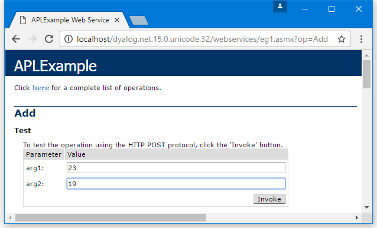
This shows that the web service is called APLExample, and that it exports a single method called Add which takes two parameters called arg1 and arg2.
shows the result of entering the values 23 and 19 into the form fields and then pressing the Invoke button. The method returns an int value of 42. The result is described using XML, which is the language used to invoke a web service and return its result.
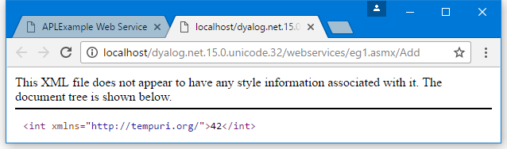
Accessed in this way from a browser, a web service appears to be behaving like a web server; however, this is not the case. Instead, the browser detects that the target URL is a web service, and invokes an ASP+ page called DefaultSdlHelpGenerator.aspx – this inspects the compiled class and returns an HTML view of the web service.
Sample: LoanService
This sample is supplied in [DYALOG]\Samples\asp.net\loan\loan.asmx, which is mapped through an IIS virtual directory to the URL http://localhost/dyalog.net.15.0.unicode.32/Loan/Loan.asmx.
This sample defines a class called LoanService that is based on System.Web.Services.WebService. The LoanService class defines a sub-class called LoanResult and a method called CalcPayments.
<%@ WebService Language="Dyalog" Class="LoanService" %>
:Class LoanService: System.Web.Services.WebService
:Using System
:Class LoanResult
:Access public
:Field Public Int32[] Periods
:Field Public Double[] InterestRates
:Field Public Double[] Payments
:EndClass
∇ R←CalcPayments X;LoanAmt;LenMax;LenMin;IntrMax;IntrMin;PERIODS;INTEREST;NI;NM
[1] :Access WebMethod
[2] :Signature LoanResult←CalcPayments Int32 LoanAmt,Int32 LenMax,Int32 LenMin,Int32 IntrMax,Int32 IntrMin
[3]
[4] ⍝ Calculates loan repayments
[5] ⍝ Argument X specifies:
[6] ⍝ LoanAmt Loan amount
[7] ⍝ LenMax Maximum loan period
[8] ⍝ LenMin Minimum loan period
[9] ⍝ IntrMax Maximum interest rate
[10] ⍝ IntrMin Minimum interest rate
[11]
[12] LoanAmt LenMax LenMin IntrMax IntrMin←X
[13] R←⎕NEW LoanResult
[14] R.Periods←¯1+LenMin+⍳1+LenMax-LenMin
[15] R.InterestRates←0.5ׯ1+(2×IntrMin)+⍳1+2×IntrMax-IntrMin
[16] NI←⍴INTEREST←R.InterestRates÷100×12
[17] NM←⍴PERIODS←R.Periods×12
[18] R.Payments←,(LoanAmt)×((NI,NM)⍴NM/INTEREST)÷1-1÷(1+INTEREST)∘.*PERIODS
∇
:EndClassCalcPayments takes five integer parameters (described within the code) and returns an object of type LoanResult.
The block of code that defines the sub-class LoanResult must be within the :Class and :EndClass statements of the main class, LoanService. You can define any number of internal classes in this way.
The LoanResult class only comprises fields, and it does not export any methods or properties. There are also no constructor methods defined, and it relies solely on its default constructor that is inherited from its base class, System.Object. The default constructor is called without any parameters and does nothing except create an instance of the class; the fields it contains initialised to zero. In this sample, that is sufficient, as all the fields will be filled in explicitly later.
:Class LoanResult
:Access public
:Field Public Int32[] Periods
:Field Public Double[] InterestRates
:Field Public Double[] Payments
:EndClassThe :Class statement starts the definition of a new class and specifies its name; the :EndClass statement terminates it definition.
The three :Field declaration statements specify the names and data types of three public fields. The Public attributes are necessary to make the fields visible to methods within the LoanService class as a whole, as well as to external clients.
The Periods field is defined to be an array of integers, and the InterestRates field an array of Double. Both these arrays are 1‑dimensional, that is, vectors. These will contain the numbers of years and the different interest rates to which the repayments matrix applies.
Payments is also defined to be 1‑dimensional even though it is, more naturally, a 2‑dimesional matrix. The reason for this is that web services do not currently support multi-dimensional arrays. This is a .NET restriction and not a Dyalog restriction.
Line [13] gets a new instance of the LoanResult class by doing ⎕New LoanResult. It then assigns values to each of the three fields in lines [14], [15], and [18].
Testing from a Browser
In your prefered browser, navigate to http://localhost/dyalog.net.15.0.unicode.32/loan/loan.asmx. The page fabricated by ASP.NET is shown in .
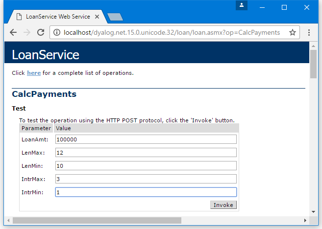
shows the result of entering into the form fields and then pressing the Invoke button.
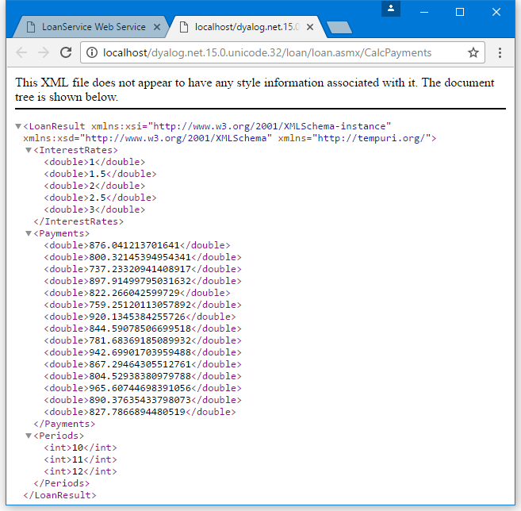
This shows that the result is of type LoanResult, and it contains 3 fields – Payments, InterestRates, and Periods. This information was derived by our definition of the LoanResult class in the APL Source file.
The InterestRates field shows that it contains a vector of floating-point values (double) from the minimum rate to the maximum rate that was specified on the input form. This time, the increment is 0.5. Similarly, the Payments field contains the calculated repayment values. The Periods field contains a vector of integers, from the minimum period to the maximum period that was specified on the input form, in increments of 1.
Sample: GolfService
This sample is supplied in [DYALOG]\Samples\asp.net\golf and is associated with the IIS Virtual Directory dyalog.net/Golf. This sample makes extensive use of internal classes to define data structures that are appropriate for a client application, such as C# or VB.
The directory contains a global.asax script, which is used to initialise the application.
This sample manages the reservation of tee-times at golf courses. All the data is held in a component file called golfdata.dcf in the [DYALOG]\Samples\asp.net\golf\data directory. This file can be initialised using the Golf.INITFILE function in the [DYALOG]\Samples\asp.net\webservices\webservices.dws workspace (you might need to alter the file path first).
Each golf course managed by the application has a unique code (integer) and a name (string). This is handled by defining a class (structure) called GolfCourse with two fields, Code and Name.
GolfService provides three methods:
-
GetCourses()returns a list of Golf Courses (CourseCode and CourseName). The result of this method is an array ofGolfCourseobjects. -
GetStartingSheet(CourseCode,Date)returns the starting sheet for a specified golf course on a given day. A starting sheet is a list of starting times with a list of the golfers booked to start their round at that time. The result of this method is aStartingSheetobject. -
MakeBooking(CourseCode,TeeTime,GimmeNearest,Name1,Name2,Name3,Name4)requests a tee reservation at the course specified byCourseCode. All parameters are required.TeeTimeis aDateTimeobject that specifies the requested date and time.GimmeNearestisBoolean–1means request the nearest tee-time to that specified, and0means request only the specified tee-time.Name1-4are strings specifying the names of up to four players. The result of this method is aBookingobject.
Global.asax
The [DYALOG]\samples\asp.net\golf\data\golfdata.dcf file needs to be located where it can be modified.
<script language="Dyalog" runat=server>
∇ Application_Start;GOLFID
:Access Public
GOLFID←'c:\Dyalog\samples\asp.net\golf\data\golfdata' ⎕FTIE 0
Application[⊂'GOLFID']←GOLFID
∇
∇ Application_End;GOLFID
:Access Public
:Trap 6
; GOLFID←Application[⊂'GOLFID']
⎕FUNTIE GOLFID
:EndTrap
∇
</script>The Application_Start function is called when the GolfService web service is invoked for the first time. It ties the golfdata component file, then stores the tie number in a new item called GOLFID in theApplication object. This item is subsequently available to methods in GolfService for the duration of the application.
The Application_End function is invoked when the GolfService web service terminates. It unties the golfdata component file.
This example could be considered slightly weak in that the location of the data file is hard-coded in the application's Global.asax file. An alternative is to store this information in the <appsettings> section of the appropriate web.config file or in the global machine.config file. This is preferable if the resource (in this case, a file name) is to be accessed from more than one script. For further information on ASP.NET config files, see the documentation for the .NET Framework SDK.
Information
The golfdata file can be initialised using the function Golf.INITFILE in the [DYALOG]\Samples\asp.net\webservices\webservices.dws workspace. The function will prompt you for the path of the file, initialise it, and update the Global.asax file accordingly.
GolfCourse Class
The GolfCourse class is effectively a structure with two fields, Code and Name. Code is an integer code that provides a shorthand way to refer to a specific golf course. Name is a String containing its full name.
:Class GolfCourse
:Access Public
:Field Public Int32 Code
:Field Public String Name
∇ ctor args
:Implements Constructor
:Access public
:Signature fn Int32, String
Code Name←args
∇
∇ ctor_def
:Implements Constructor
:Access public
ctor ¯1 ''
∇
:EndClassThe GolfCourse class provides two constructors. The first, ctor_def, takes no arguments and, therefore, overrides the default constructor that is inherited from System.Object. ctor_def calls ctor to initialise the instance with a code of ¯1 and an empty Name.
The constructor ctor accepts two parameters, CourseCode (an integer) and CourseName (a string). It assigns these values into the corresponding fields.
Valid ways to create an instance of a GolfCourse are:
GC←⎕NEW GolfCourse
GC.(Code Name)←1 'St Andrews'Or, more simply:
GC←⎕NEW GolfCourse (1 'St Andrews') Information
The names of constructor functions are not visible outside the class. Constructors are identified by their signatures (the :Implements Constructor statement) and not by their names.
Slot Class
The Slot class is effectively a structure with two fields, Time and Players. Time is a DateTime object representing a time that can be reserved on the first tee. Players is an array of (up to 4) strings that contains the names of the golfers who have made a reservation to start their round of golf at that time.
:Class Slot
:Access Public
:Field Public DateTime Time
:Field Public String[] Players
∇ ctor1 arg
:Implements Constructor
:Access public
:Signature fn DateTime
Time←arg
Players← 0⍴⊂''
∇
∇ ctor2 args
:Implements Constructor
:Access public
:Signature fn DateTime, String[]
Time Players←args
∇
∇ ctor_def
:Implements Constructor
:Access public
∇
:EndClassThis class provides two constructor functions, ctor1 and ctor2. For internal reasons, if a class defines any constructor functions, then it is necessary to provide a dummy default constructor (the form of the constructor that takes no parameters); hence ctor_def.
The constructor ctor1 accepts a single DateTime parameter, which it assigns to the Time field, and initialises the Players field to an empty array.
The constructor ctor2 accepts two arguments – a specified tee time, and an array of strings that contains golfers' names. It assigns these parameters to Time and Players respectively.
Booking Class
The Booking class represents the result of the MakeBooking method. It contains four fields – OK, Course, TeeTime, and Message.
OK is Boolean, and indicates whether an attempt to make a reservation was successful:
-
If
OKis false (0), theMessagefield (a string) indicates the reason for failure. -
If
OKis true (1), theCoursefield contains an instance of aGolfCourseobject, and theTeeTimefield contains an instance of aSlotobject. Together, these objects identify the reserved golf course and starting slot. The latter specifies both the starting time and the names of all the golfers who have been allocated that starting time and who will, therefore, play together.
:Class Booking
:Access Public
:Field Public Boolean OK
:Field Public GolfCourse Course
:Field Public Slot TeeTime
:Field Public String Message
∇ ctor args
:Implements Constructor
:Access public
:Signature fn Boolean, GolfCourse, Slot, String
OK Course TeeTime Message←args
∇
∇ ctor_def
:Access public
:Implements Constructor
∇
:EndClassThis class provides a single constructor method, which must be called with values for all four fields.
StartingSheet Class
The StartingSheet class represents the result of the GetStartingSheet method. It contains five fields – OK, Course, Date, Slots, and Message.
OK is Boolean, and indicates whether a starting sheet is available for the specified course and date:
-
If
OKis false (0), theMessagefield (a string) indicates the reason for failure. -
If
OKis true (1) theCoursefield contains an instance of aGolfCourseobject, theDatefield contains the date in question, and theSlotsfield contains an array ofSlotobjects. EachSlotobject specifies a starting time, and the names of all the golfers who have been allocated that starting time and who will, therefore, play together.
:Class StartingSheet
:Access Public
:Field Public Boolean OK
:Field Public GolfCourse Course
:Field Public DateTime Date
:Field Public Slot[] Slots
:Field Public String Message
∇ ctor args
:Implements Constructor
:Access public
:Signature fn Boolean, GolfCourse, DateTime
OK Course Date←args
∇
∇ ctor_def
:Implements Constructor
:Access public
∇
:EndClassLike the Booking class, the StartingSheet class provides a single constructor method. In this case, the constructor is called with values for just three of the fields; the values of the other fields are expected to be assigned later.
GetCourses Function
∇ R←GetCourses;COURSECODES;COURSES;INDEX;GOLFID
[1] ⍝
[2] :Access WebMethod
[3] :Signature GolfCourse[]←fn
[4]
[5] GOLFID←Application[⊂'GOLFID']
[6] COURSECODES COURSES INDEX←⎕FREAD GOLFID 1
[7] R←⎕NEW¨GolfCourse,¨⊂¨↓⍉↑COURSECODES COURSE
∇The GetCourses function retrieves the tie number of the GolfData component file from the Application object and reads its first component.
The function then creates a GolfCourse object for each of the courses recorded on the file, and returns the array of GolfCourse objects as its result.
GetStartingSheet Function
The GetStartingSheet function retrieves the tie number of the GolfData component file from the Application object and reads its first component.
∇ R←GetStartingSheet ARGS;CODE;COURSE;DATE;GOLFID;COURSECODES;COURSES;INDEX;COURSEI;IDN;DATES;COMPS;IDATE;TEETIMES;GOLFERS;I;T
[1]
[2] :Access WebMethod
[3] :Signature StartingSheet←fn Int32 CCode, DateTime Date
[4]
[5] CODE DATE←ARGS
[6] GOLFID←Application[⊂'GOLFID']
[7] COURSECODES COURSES INDEX←⎕FREAD GOLFID 1
[8] COURSEI←COURSECODES⍳CODE
[9] COURSE←⎕NEW GolfCourse (CODE(COURSEI⊃COURSES,⊂''))
[10] R←⎕NEW StartingSheet (0 COURSE DATE)
[11] :If COURSEI>⍴COURSECODES
[12] R.Message←'Invalid course code'
[13] :Return
[14] :EndIf
[15] IDN←2 ⎕NQ'.' 'DateToIDN',DATE.(Year Month Day)
[16] DATES COMPS←⎕FREAD GOLFID,COURSEI⊃INDEX
[17] IDATE←DATES⍳IDN
[18] :If IDATE>⍴DATES
[19] R.Message←'No Starting Sheet available'
[20] :Return
[21] :EndIf
[22] TEETIMES GOLFERS←⎕FREAD GOLFID,IDATE⊃COMPS
[23] R.OK←1
[24] T←⎕NEW¨DateTime,¨⊂¨(⊂DATE.(Year Month Day)),¨ 3↑¨↓[1]24 60⊤TEETIMES
[25] R.Slots←⎕NEW¨Slot,¨⊂¨T,∘⊂¨↓GOLFERS
∇Line [10] creates an instance of a StartingSheet object and uses it to initialise the result R. The value of the OK field is set to zero to indicate failure. It then validates the requested CourseCode. If invalid, it sets the Message field in the result and returns it. Similarly, it checks to see whether there is a starting sheet on file for the requested date and, if there is not, it sets the Message field to indicate this, and returns.
Line [15] extracts the Year, Month and Day properties from the requested tee time, a DateTime object, and converts them to an IDN. This is used to index the component containing the starting sheet for that day.
Line [23] sets the OK field of the result to 1 (success).
Line [24] converts the stored tee times (in minutes) to DateTime objects.
Line [25] combines the tee times and golfers into a vector of 2-element arrays, and creates a Slot object for each of them. The result is assigned to the Slots field of the result R.
MakeBooking Function
The MakeBooking function checks that the requested tee-time is available (for the specified number of players) and updates the starting sheet accordingly. The result of the function is a Booking object.
∇ R←MakeBooking ARGS;CODE;COURSE;SLOT;TEETIME;GOLFID;COURSECODES;COURSES;INDEX;COURSEI;IDN;DATES;COMPS;IDATE;TEETIMES;GOLFERS;OLD;COMP;HOURS;MINUTES;NEAREST;TIME;NAMES;FREE;FREETIMES;I;J;DIFF
[1]
[2] :Access WebMethod
[3] :Signature Booking←Int32 CourseCode,
DateTime TeeTime,
Boolean GimmeNearest,
String Name1,
String Name2,
String Name3,
String Name4
[4]
[5]
[6] ⍝ If GimmeNearest=0, books (or fails) for specified time
[7] ⍝ If GimmeNearest=1, books (or fails) for nearest to specified time
[8]
[9] CODE TEETIME NEAREST←3↑ARGS
[10] GOLFID←Application[⊂'GOLFID']
[11] COURSECODES COURSES INDEX←⎕FREAD GOLFID 1
[12] COURSEI←COURSECODES⍳CODE
[13] COURSE←⎕NEW GolfCourse,⊂CODE(COURSEI⊃COURSES,⊂'')
[14] SLOT←⎕NEW Slot TEETIME
[15] R←⎕NEW Booking (0 COURSE SLOT '')
[16] :If COURSEI>⍴COURSECODES
[17] R.Message←'Invalid course code'
[18] :Return
[19] :EndIf
[20] :If TEETIME.Now>TEETIME
[21] R.Message←'Requested tee-time is in the past'
[22] :Return
[23] :EndIf
[24] :If TEETIME>TEETIME.Now.AddDays 30
[25] R.Message←'Requested tee-time is more than 30 days from now'
[26] :Return
[27] :EndIf
[28] IDN←2 ⎕NQ'.' 'DateToIDN',TEETIME.(Year Month Day)
[29] DATES COMPS←⎕FREAD GOLFID,COURSEI⊃INDEX
[30] IDATE←DATES⍳IDN
[31] :If IDATE>⍴DATES
[32] TEETIMES←(60×7)+10ׯ1+⍳1+8×6 ⍝ 10 minute intervals, 07:00 to 15:00
[33] GOLFERS←((⍴TEETIMES),4)⍴⊂'' ⍝ up to 4 golfers allowed per tee time
[34] :If 0=OLD←⊃(DATES<2 ⎕NQ'.' 'DateToIDN',3↑⎕TS)/⍳⍴DATES
[35] COMP←(TEETIMES GOLFERS)⎕FAPPEND GOLFID
[36] DATES,←IDN
[37] COMPS,←COMP
[38] (DATES COMPS)⎕FREPLACE GOLFID,COURSEI⊃INDEX
[39] :Else
[40] DATES[OLD]←IDN
[41] (TEETIMES GOLFERS)⎕FREPLACE GOLFID,COMP←OLD⊃COMPS
[42] DATES COMPS ⎕FREPLACE GOLFID,COURSEI⊃INDEX
[43] :EndIf
[44] :Else
[45] COMP←IDATE⊃COMPS
[46] TEETIMES GOLFERS←⎕FREAD GOLFID COMP
[47] :EndIf
[48] HOURS MINUTES←TEETIME.(Hour Minute)
[49] NAMES←(3↓ARGS)~⍬''
[50] TIME←60⊥HOURS MINUTES
[51] TIME←10×⌊0.5+TIME÷10 ⍝ Round to nearest 10-minute interval
[52] :If ~NEAREST
[53] I←TEETIMES⍳TIME
[54] :If I>⍴TEETIMES
[55] :OrIf (⍴NAMES)>⊃,/+/0=⍴¨GOLFERS[I;]
[56] R.Message←'Not available'
[57] :Return
[58] :EndIf
[59] :Else
[60] :If ~∨/FREE←(⍴NAMES)≤⊃,/+/0=⍴¨GOLFERS
[61] R.Message←'Not available'
[62] :Return
[63] :EndIf
[64] FREETIMES←(FREE×TEETIMES)+32767×~FREE
[65] DIFF←|FREETIMES-TIME
[66] I←DIFF⍳⌊/DIFF
[67] :EndIf
[68] J←(⊃,/0=⍴¨GOLFERS[I;])/⍳4
[69] GOLFERS[I;(⍴NAMES)↑J]←NAMES
[70] (TEETIMES GOLFERS)⎕FREPLACE GOLFID COMP
[71] TEETIME←⎕NEW DateTime,⊂TEETIME.(Year Month Day), 3↑24 60⊤I⊃TEETIMES
[72] SLOT.Time←TEETIME
[73] SLOT.Players←(⊃,/0<⍴¨GOLFERS[I;])/GOLFERS[I;]
[74] R.(OK TeeTime)←1 SLOT
∇MakeBooking first retrieves the tie number of the GolfData component file from the Application object and reads its first component.
Lines [13 14] create instances of GolfCourse and Slot objects, which at this stage are not validated. Line[15] then initialises the result, R, a Booking object, that includes these instances. At this stage, R.OK is 0, indicating failure.
Line [16] validates the requested CourseCode, and, if invalid, sets R.Message and returns.
Similarly, lines [20 23] check that the requested tee time is within the next 30 days from now. If not, the function assigns the appropriate error message to R.Message and returns. These two statements employ the primitive function > (rather that the op_GreaterThan method) to compare the requested tee time (a DateTime object) with a new DateTime object that represents Now and Now+30 days respectively.
Line[24] uses the AddDays method to create a new DateTime object that represents Now+30 days. An alternative expression to get Now+30 days is:
TEETIME.Now+⎕NEW TimeSpan (30 0 0 0)Lines [28-47] are concerned with retrieving the appropriate component from the file and initialising it, or re-using an old one if it is not present. Each component represents the starting sheet for a particular course on a particular day.
Lines [48-63] check whether the requested slot is available (for the specified number of golfers). If not, it returns an error message as before or, if GimmeNearest is 1 (true), it attempts to allocate the slot closest to the requested time.
If an appropriate slot is found, lines [72 73] update the Slot object with the assigned time and names of the golfers. Line [74] then inserts the modified Slot object into the result, and sets the OK field to 1 (true) to indicate success.
Testing from a Browser
In your prefered browser, navigate to http://localhost/dyalog.net.15.0.unicode.32/Golf/Golf.asmx. The page fabricated by ASP.NET is shown in – the three methods exposed by GolfService are listed.
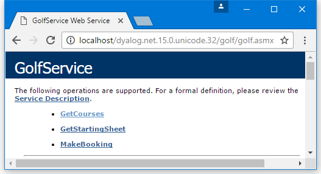
shows the result of clicking on GetCourses, thereby accessing the GetCourses method. The data type of the result is ArrayOfGolfCourse, and the data type of each element of the result is GolfCourse. The public fields defined for the GolfCourse object are clearly named. All this information is derived from the declarations in the Golf.asmx script. The GolfData component file contains only three golf courses.
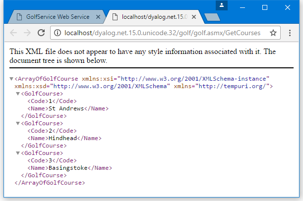
shows the result of clicking on MakeBooking, thereby accessing the MakeBooking method.
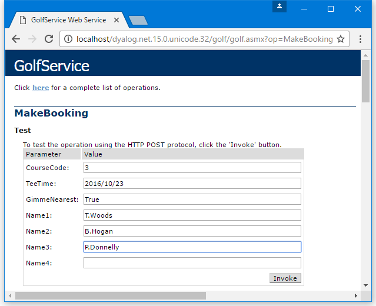
ASP.NET generates a form containing fields that allow the user to invoke the MakeBooking method. Notice the way a TeeTime value is specified. The GimmeNearest parameter is Boolean, so you must enter True or False – if you enter 0 or 1, an error is generated and the application does not try to call MakeBooking.
When experimenting with adding values to this form, the date entered must be within the next 30 days from today's system date, and the time must be between 07:00 and 15:00 (unless you want to experiment with invalid data to check the error handling).
shows the result of invoking MakeBooking with this data. All the information about the Booking object structure, including the structure of the sub-objects, is provided.
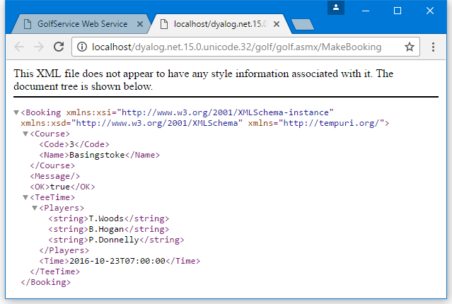
shows the result of clicking on GetStartingSheet, thereby accessing the GetStartingSheet method.
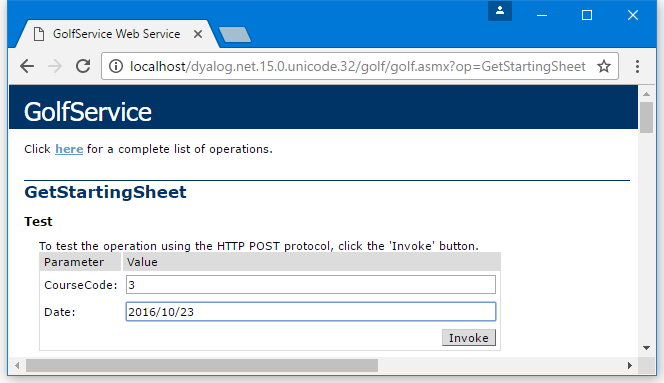
When experimenting with adding values to this form, choose a course and date on which you have made at least one successful booking.
shows the result of invoking GetStartingSheet with this data. This shows that the result, a StartingSheet object, contains an array of Slot objects, each of which contains a Time field and a Players field.
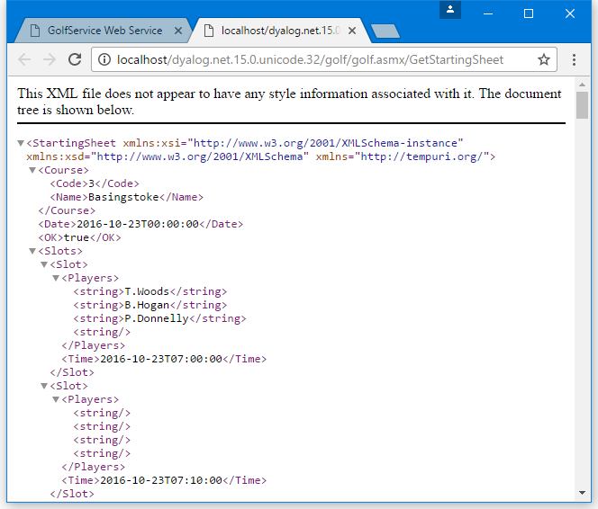
Using from C#
The csharp sub-directory in [DYALOG]\Samples\asp.net\golf contains sample files for accessing the GolfService web service from C#. The C# source code in Golf.cs is:
using System;
class MainClass {
static void Main(String[] args)
{
GolfService golf = new GolfService();
int nArgs = args.Length;
Booking booking;
booking=golf.MakeBooking(
/* Course Code */ 1,
/* Desired Tee Time */ DateTime.Parse(args[0]),
/* nearest is OK */ true,
/* player 1 */ (nArgs > 1) ? args[1] : "",
/* player 2 */ (nArgs > 2) ? args[2] : "",
/* player 3 */ (nArgs > 3) ? args[3] : "",
/* player 4 */ (nArgs > 4) ? args[4] : ""
);
Console.WriteLine(booking.OK);
Console.WriteLine(booking.TeeTime.Time.ToString());
foreach (String player in booking.TeeTime.Players)
Console.WriteLine(player);
}
}
The C# program [DYALOG]\Samples\asp.net\golf\golf.exe can be run from a command prompt window. For example:
csharp>golf 2006-08-07T08:00:00 T.Woods A.Palmer P.Donnelly
True
25/08/2008 08:00:00
T.Woods
A.Palmer
P.Donnelly
csharp>Sample: EG2
This sample is supplied in [DYALOG]\Samples\asp.net\webservices\eg2.asmx, which is mapped through an IIS virtual directory to the URL http://localhost/dyalog.net/webservices/eg2.asmx.
In other previous webservice samples (EG1, LoanService, and Golfservice), ASP.NET compiled the APL source file into a .NET class prior to running it. This sample illustrates how you can make a .NET class yourself. In this sample, the web service script is reduced to a single statement that invokes the pre-defined class APLServices.Example; the entire file, viewed using Notepad, is shown in .
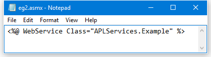
Given this instruction, ASP.NET will locate the APLServices.Example web service by searching the bin sub-directory for assemblies. Therefore, to make this work, we need to create a .NET assembly in [DYALOG]\Samples\asp.net\webservices\bin. The assembly should contain a .NET namespace named APLServices, which in turn defines a class named Example.
The procedure for creating .NET classes and assemblies in Dyalog was described in Writing .NET Classes and its sub-sections. The same procedure is performed to make a web service class.
[DYALOG]\Samples\asp.net\webservices\bin already contains copies of the dependent Dyalog DLLs that are required to execute the code.
To be able to create an assembly, Dyalog must be started with administration privileges (right-click on the Dyalog icon, and select Run as administrator).
In a clear workspace, create a namespace called APLServices. This will act as the container corresponding to a .NET namespace in the assembly.
)NS APLServices
#.APLServicesWithin APLServices, create a class called Example that inherits from System.Web.Services.WebService. This is the web service class.
)CS APLServices
#.APLServices
)ED ○Example
:Class Example: WebService
:Using System
:Using System.Web.Services,System.Web.Services.dll
∇ R←Add arg
:Access webmethod
:Signature Int32←Add Int32 arg1, Int32 arg2
R←+/arg
∇
:EndClass Within APLServices.Example, the function called Add represents the single method to be exported by this web service.
Fix the class, then click File > Save As... in the menu and save the workspace as egs.dws in [DYALOG]\Samples\asp.net\webservices\bin.
Select File > Export... in the menu, and save the assembly as eg2.dll in the same directory.
When you click Save, the Status window displays the information shown in to confirm that the assembly has been created correctly.
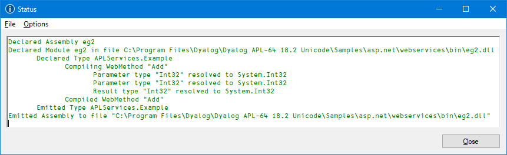
Testing from a Browser
In your prefered browser, navigate to http://localhost/dyalog.net.15.0.unicode.32/webservices/eg2.asmx. The page fabricated by ASP.NET is shown in .
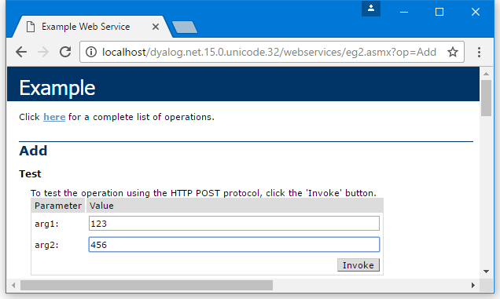
This shows that the web service is called Example, and that it exports a single method called Add which takes two parameters called arg1 and arg2.
shows the result of entering the values 123 and 456 into the form fields and then pressing the Invoke button. The method returns an int value of 579.
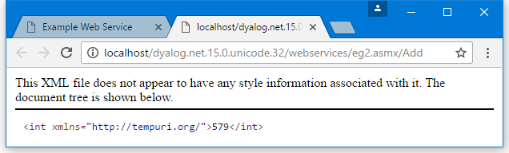